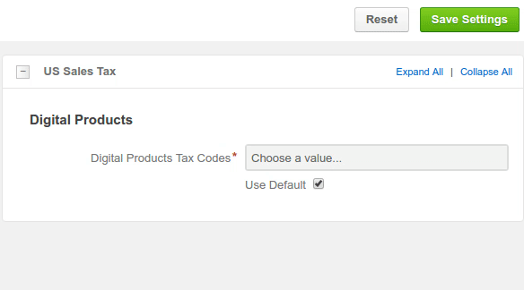
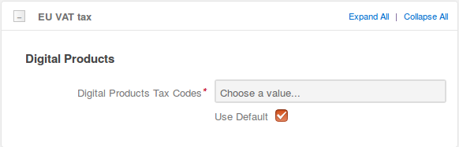
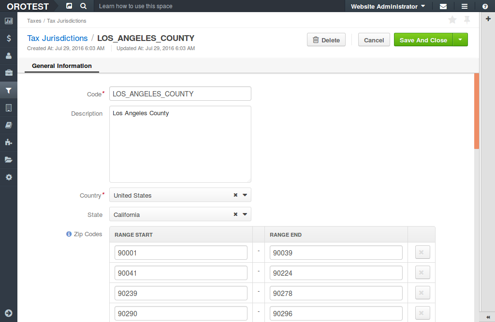
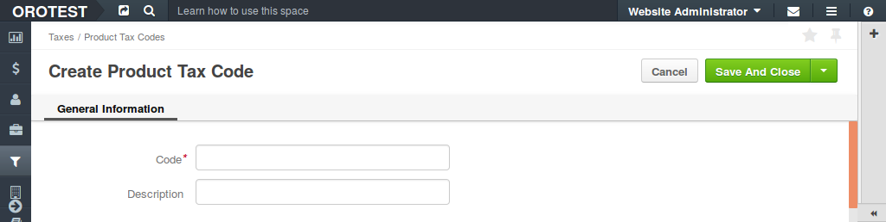

Taxes
This topic contains the following sections:
Overview
An international B2B selling business has certain international tax obligations, like a sales tax in the U.S. and Value Added Tax (VAT) in EU and other countries. In addition to that, some products are tax-free or have lower tax rates and some of your customers may be eligible for tax exemption.
Tax management in OroCommerce helps you ensure compliance with the tax rules and regulations in global B2B online sales. With built in tax rules and tax reports you get timely and precise information for your sales tax, goods and services tax, or value added tax payment. You may inform your buyer about the volume of tax included into their order or quote, or may include the tax in the product price they see placing an order.
The following sections provide information and guidance on the following topics:
- Setting up tax rules that define the tax rate applied for a product group sold to a group of customers with similar tax obligations. The tax rate depends both on the tax jurisdiction, the tax status of your customers and the tax status of the products you are selling. When your customer files a purchase order, OroCommerce automatically picks the necessary tax rate and calculates the tax amount to be covered by your customer in this purchase order.
- Managing tax exemption: enabling zero tax rates in certain jurisdictions for the selected product categories (e.g. medical products) or customers (e.g. schools, hospitals, government organizations).
- Controlling digital product taxes. Some states in USA and the EU have special rules for taxing digital products. OroCommerce takes those regulations into account and enforces destination-based taxation when the buyer’s location is in EU or in the state with no digital product tax in USA. OroCommerce distinguishes purchases of digital products by the product tax code. All digital items should be labeled with a special tax code for digital products. Moreover, all these tax codes should be listed in EU VAT Tax and US Sales Tax configuration, to launch special tax calculation rules.
Before You Begin: Taxation Configuration
OroCommerce groups taxation configuration options into the following categories:
Tax Calculation
By default, OroCommerce calculates tax using a rate defined in the built-in tax rule for the default shipping origin address.
You can modify the following configuration settings that impact the way OroCommerce implies tax in the Purchase Order or Quote (see Configure Tax Calculation for detailed guidance):
Enable or disable tax calculation for the products you sell.
Select a tax provider. OroCommerce build-in Table Rates - the tax rules defined in Manage Tax Rules section below - are used by default. Alternatively, with some customization, you can use external tax management and compliance system, like AvaTax or Vertex, as a tax provider.
Apply taxes per single item in the purchase order or per total for the requested amount of the items of same kind. This may minimize roundoff accumulated error and guard you and your customers from over or under paying.
Configure how OroCommerce selects the core jurisdiction for which tax rules should be applied in a purchase order tax calculation. Tax jurisdiction may be defined by either shipping origin, billing address or shipping destination.
Set up any tax jurisdiction exceptions - countries and states where tax jurisdiction selection deviates from the core rule. For example, when the main tax jurisdiction is at the sale shipping destination, the exception may be for some countries and states to use shipping origin instead.
Determine whether the tax is included in the product price. When this option is enabled, the product price displayed in the purchase order will increase by the value of tax for this product item. Note: This may complicate the tax returns and deduction for your customers who are businesses.
Configure a shipping origin address that will be used system-wide for origin-based tax. When the shipping origin is a core jurisdiction, OroCommerce will use the address provided here to find the matching built-in tax jurisdiction rules for tax calculation.
Configure Tax Calculation
To customize tax calculation in OroCommerce:
- Navigate to the system configuration (click System > Configuration in the main menu).
- Select Commerce > Taxation > Tax Calculation in the menu to the left.
Note
For faster navigation between the configuration menu sections, use Quick Search.
The following page opens:
Note
Remember to clear the Use default flag before setting a custom option.
- In Enable Taxation section, enable or disable taxation by setting or clearing the Enabled box.
- In Tax Provider section, keep the default Built-in Table Rates or, if you have extended the default capabilities and set up an integration, select your custom tax management system.
- In Calculator section:
- With Start Calculation With, specify the formula for tax calculation. Tax is calculated either for unit price or for a product total price. Formula for Unit price is: tax = [ ( unit price * tax rate ) * unit quantity ] + ... + [ ( unit price * tax rate ) * unit quantity ]. Formula for Row Total is: tax = [ (unit price * unit quantity) * tax rate ] + ... + [ (unit price * unit quantity) * tax rate ].
- With Start Calculation On option, select when the rounding off shall happen. For Item, the taxable amount is rounded up for every item. For Total, the total tax is aggregated as is, and the final amount is rounded up.
- Set or clear the Product prices include tax option. When product prices include tax, the tax amount is subtracted from unit, product, or total price. Otherwise, the tax is added on top of the unit, product, or total price.
- In Matcher section:
- Select the default tax jurisdiction base:
- For origin-based jurisdiction, select Shipping Origin, or
- For destination-based jurisdiction, select Destination.
- Specify all countries and states/regions that do not follow the default tax jurisdiction base. Click + Add, select a country, type in state or region and select the alternative tax jurisdiction base.
- If you use destination as tax jurisdiction base by default or for any exclusions, select either Shipping Address or Billing Address as Destination.
- Select the default tax jurisdiction base:
- In Origin section, provide the origin address (e.g. location of your warehouse or company legal address). For the origin-based jurisdictions, OroCommerce uses this address to find the matching tax rule.
- Click Save.
US Sales Tax for Digital Products
When the digital product is purchased from the shipping origin address in the state with zero tax rate for digital products, the tax is calculated based on the shipping destination, and the global system tax calculation rules are ignored.
Note
To ensure that US sales tax for digital products is correctly calculated and included in your purchase quotes and orders when you sell to the US customers or from the US warehouse, label the necessary digital product tax codes in OroCommerce as taxable in US.
Preview:
To label digital product codes in OroCommerce as taxable in US:
- Navigate to System > Configuration > Commerce > Taxation > US Sales Tax.
Note
For faster navigation between the configuration menu sections, use Quick Search.
- Clear the Use Default check and click on Choose the value. To filter list of product tax codes, start typing the code name. The list refreshes automatically to show the values matching the text you enter. Once the necessary product code is found, select it to add to the Digital Products Tax Codes list.
- Click Save.
EU VAT Tax for Digital Products
The EU VAT tax is applied when the digital goods’ buyer is located in EU. The tax is calculated based on the shipping destination, and the global system tax calculation rules are ignored.
Note
To ensure that the value added tax for digital products is included in your purchase quotes and orders from and to European Union, list all digital product tax codes in the EU VAT Tax configuration.
To configure the digital product codes that are taxable in EU:
- Navigate to System > Configuration > Commerce > Taxation > EU VAT Tax.
Note
For faster navigation between the configuration menu sections, use Quick Search.
The following page opens:
- Clear the Use Default check and click on Choose the value. To filter list of product tax codes, start typing the code name. The list refreshes automatically to show the values matching the text you enter. Once the necessary product code is found, select it to add to the Digital Products Tax Codes list.
- Click Save.
Manage Tax Rules
Tax rules help OroCommerce find the correct tax rate that should be used for the products listed in the purchase order by matching the product tax code that indicates tax status of the product, customer tax code that indicates tax status of the buying company, and tax jurisdiction where the tax is due. OroCommerce supports tax exemption mechanism: you can set zero tax rate for some customers and/or products.
Basically, in OroCommerce, tax rule binds the following items:
- tax jurisdiction - an address, usually a state in a country that have defined taxation policies that determine when and how the company should pay their sales or VAT tax, and what rates should be used, depending on the tax status of the products you sell and parties you sell to.
- customer tax code - a label for a customer or customer group that follow similar taxation rules in at least one tax jurisdictions.
- product tax code - a label for a group of products that have similar taxation rules in at least one tax jurisdictions.
- tax rate - the percentage of the sales income that should be payed as a tax in the particular tax jurisdiction for a certain type of products sold to a group of customers with the same tax status.
Create a Tax Rule
Note
See a short demo on how to create tax rules in OroCommerce, or keep reading the step-by-step guidance below.
To create tax rules for a particular tax jurisdiction:
Create a tax jurisdiction (country, state and a range of zip codes) where a special taxation rules apply.
Create customer tax codes for every group of buyers that have fixed tax rates in this tax jurisdiction. Link the customer groups to their respective tax codes.
Create product tax codes for every group of products that have fixed tax rates in this tax jurisdiction. Ensure that these tax codes are assigned to the products.
Create all the tax rates defined by the tax jurisdiction for the customers you are serving and products you are selling.
Finally, for every valid combination of the tax rates, product types and customer types, create a tax rule:
Navigate to Taxes > Tax Rules and click Create Tax Rule.

In the lists select the Account Tax Code (customer tax code), product tax code, tax jurisdiction, and tax (tax rate). Optionally, add description of the tax rate applied.
Click Save or Save and Close.
Create a Tax Jurisdiction
Note
See a short demo on how to create tax codes and jurisdictions in OroCommerce, or keep reading the step-by-step guidance below.
To create a new tax jurisdiction:
Navigate to Taxes > Tax Jurisdictions in the main menu.
Click Create Tax Jurisdiction.
The following page opens:

Fill in Code, Description.
Select the country from the list.
Select the state from the list.
Type in the Zip code ranges that should be covered by this tax jurisdiction (click +Add to capture additional range).
Click Save on the top right of the page.
The new tax jurisdiction is created.
Create a Tax Rate
To create a new Tax Rate:
Navigate to Taxes > Taxes in the main menu.
Click Create Tax.
The following page opens:

Fill in Code, Description, and Rate (%).
Click Save on the top right of the page.
The new Tax Rate is created.
Create a Product Tax Code
To create a new Product Tax Code:
Navigate to Taxes > Product Tax Codes in the main menu.
Click Create Product Tax Codes.
The following page opens:
Fill in Code and Description with information about the Product Tax Code you are creating.
Click Save on the top right of the page.
The new Product Tax Code is created.
Create a Customer Tax Code
To create a new Customer Tax Code:
Navigate to Taxes > Customer Tax Codes in the main menu.
Click Create Customer Tax Codes.
The following page opens:
Fill in Code and Description with information about the Customer Tax Code you are creating.
Click Save on the top right of the page.
The new Customer Tax Code is created.
Link a Tax Code to a Customer or Customer Group
Customer
To link a tax code to a customer:
- Navigate to the necessary customer and open it for editing (e.g. click Customers > Customers in the main menu, filter customers to find the one you need, hover over the More Options menu to the right of the item and click the to start editing its details).
- In the General section, in the Tax Code list, select the tax code that matches customer’s tax obligations.
- Click Save.
A clickable tax code link is now available in the Customer details.

Customer Group
A tax code assigned to a customer group is by default applied to the customers in a group, until they have the overriding tax association in their details.
To link a tax code to a customer group:
- Navigate to the necessary customer group and open it for editing (e.g. click Customers > Customer Groups in the main menu, filter customer groups to find the one you need, hover over the More Options menu to the right of the item and click the to start editing its details).
- In the General section, in the Tax Code list, select the tax code that matches customer’s tax obligations.
- Click Save.
A clickable tax code link is now available in the Customer and Customer Group details.
Link a Tax Code to a Product
To link a tax code to a product:
Navigate to the necessary product (e.g. click Products > Products in the main menu, filter products to find the one you need).
Hower over the More Options menu to the right of the item and click the to start editing its details.
In the General section, in the Tax Code list, select the tax code that matches tax regulation for the product.
Click Save.
A clickable tax code link is now available in the Product details.
Related Information